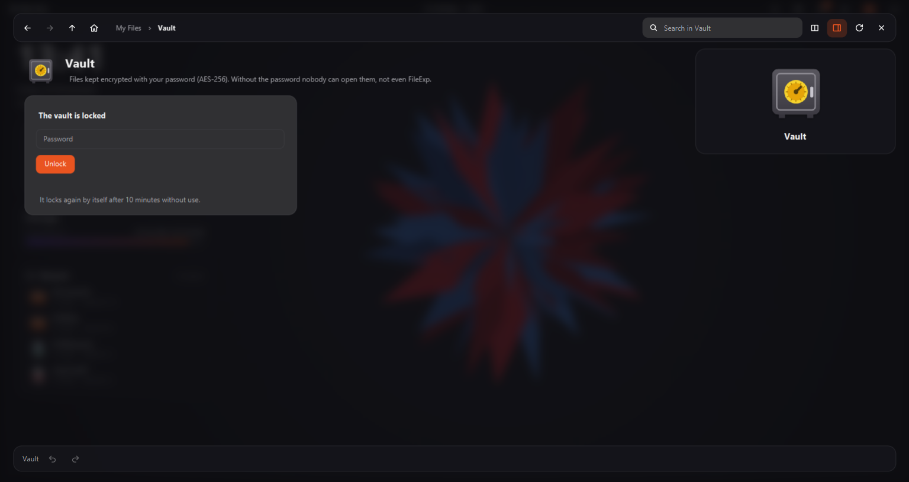

Documentation › User guide
Vault
The vault is an encrypted folder for private files: documents, scans of ID cards, passwords exported from other programs, and so on. Open it from My Files › Folders › Vault.

Creating the vault#
- Open Vault and choose a password of at least 6 characters (a long sentence is easier to remember and harder to guess).
- Confirm it.
There is no way to recover the vault without the password. Not even Muendu Studio can open it. Write the password down somewhere safe.
Putting files in the vault#
Right-click files › Vault › Move to the vault or Copy to the vault. Inside the open vault, Add a file… and Add a folder… add a copy.
- Move encrypts the file and then deletes the original for good — it does not go to the Trash, so no unprotected copy is left behind.
- Copy encrypts a copy and keeps the original.
Using the vault#
- Open a file: it is decrypted to a private folder that is emptied when the vault closes.
- Save a copy… decrypts a file to a folder you choose.
- Delete removes a file from the vault.
- Lock closes the vault at once.
The vault closes by itself after 10 minutes without use and when FileExp quits.
How it protects your files#
| Cipher | AES-256-GCM, in authenticated blocks of 1 MiB |
| Key | Derived from your password with PBKDF2-HMAC-SHA256, 310 000 iterations |
| Names, sizes and dates | Kept in an index that is also encrypted |
| Tampering | Cutting, swapping or changing any block is detected and the file is refused |
| Location | ~/.fileexp/vault (encrypted), ~/.fileexp/vault-open (only while open) |